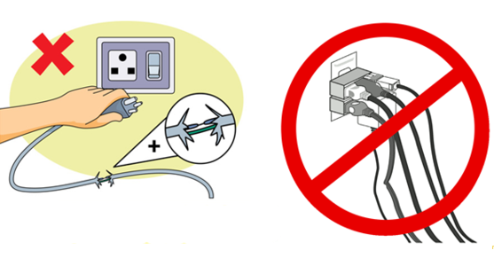

Top Tips and tricks
- 1. Install smoke alarms on every level of your home, inside bedrooms and outside sleeping areas
- 2. Test Smoke alarms every month. If they're not working, change the batteries.
- 3. Talk with all family members about a fire escape plan and practice the plan twice a year
- 4. Keep fire extinguisher in key areas such as the kitchen, bedrooms, workshop, and garage.
- 5. Never get into a lift when there is a fire .Use the stairs.
What to do if a fire starts
- 1. In case of a fire, call 999 immediately.Never assume someone has already done it.
- 2. When you notice a fire, activate your buildings fire alarm and shout FIRE at the top of your voice to alert others.
- 3. When caught in smoke, cover your mouth and nose with wet cloth!
- 4. If you are caught in a room with smoke can't find a way out,close the door and seal all cracks with wet towels or sheets.This will prevent smoke from coming in.
- 5. If your clothes catch fire. do not run.That will fan the flames. Lie down and roll around. Smother the flames with heavy material, like a blanket or a coat.
Prevention and preparation

- The following simple precautions will help minimize the risk of a fire in your home
- 1. Assign a special closet for combustible materials and dangerous tools that you do not want your children to touch. Put a good lock on the door and a heat detector inside to alert you to any fire danger.
- 2. Do not overload electrical circuits with too many applications. If your fuses are blowing or your circuit breakers are poping, hire an electrician to look at your system.
- 3. Nails or staples used to attach electrical cords to the walls or baseboards can demage the cords and cause fire or shock hazards.
- 4. Keep combustibles away from the furnace, which can emit flames or sparks.
- 5. Some fire departments supply stickers that can be placed in a window to alert firefighters to the presence of a child or an elderly or physically challenged person.Determine whether such stickers are available in your locality.
- 6. Unplug your hair dryer or any other small appliance in the bathroom when not in use.
- 7. Be sure to turn a heating pad off before you go to sleep. It can cause burns even at a relatively low setting.
Safety Equipments
How to use fire extinguisher

- 1. Consider having one or more working fie extinguishers in your home. An extinguisher rated A B C is recommended for home use. Many fire extinguisher models are designed for one time use and cannot be recharged.
- 2. Get training from the fire department or a fire extinguisher manufacturer. Fire extinguishers from various manufacturers operate in different ways and there is no time to read directions during an emergency. Only adults should handle and use extinguishers
- 3. When caught in smoke, cover your mouth and nose with wet cloth!
- 4. If you try to use a fire extinguisher on a fire and the fire does not immediately die down, drop the extinguisher and get out. Most portable extinguishers empty in 8 seconds.
- 1. In new homes, The national Fire Alarm Code requires hard-wired, interconnected smoke alarms with battery back-up on every level of the home, outside each sleeping area, and wired together so that if one sounds, they all sound.
- 2. In existing homes If smoke alarms are not already in place, at a minimum install them on every level of the home and outside each sleeping area. If a fire occurs inside a bedroom, dangerous gases can cause heavier sleep.For the best protection, install interconnected smoke alarms in each bedroom and throughout the home. When one sounds, they all sound.
- 3. Use the test button to test your smoke alarms at least monthly. The test feature tests all electronic functions and is safer than testing with a controlled fire (matches,lighters,cigarettes).
How to use smoke detector effectively